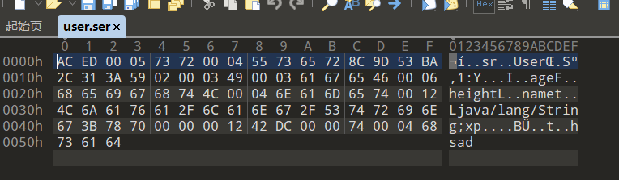

0x01 前言
- 什么是序列化与反序列化？
- 序列化与反序列化的关键函数？
- 反序列化过后的数据有啥特征?
- java反序列化漏洞与php反序列化漏洞的相似之处?
其实java反序列化漏洞的原理很简单，只是各个POP链比较复杂。
0x02 概念
我们知道，当两个进程进行远程通信时，可以相互发送各种类型的数据，包括文本、图片、音频、视频等， 而这些数据都会以二进制序列的形式在网络上传送。那么当两个Java进程进行通信时，能否实现进程间的对象传送呢？答案是可以的。如何做到呢？这就需要Java序列化与反序列化了。换句话说，一方面，发送方需要把这个Java对象转换为字节序列，然后在网络上传送；另一方面，接收方需要从字节序列中恢复出Java对象。
当我们明晰了为什么需要Java序列化和反序列化后，我们很自然地会想Java序列化的好处。其好处一是实现了数据的持久化，通过序列化可以把数据永久地保存到硬盘上（通常存放在文件里），二是，利用序列化实现远程通信，即在网络上传送对象的字节序列。
① 想把内存中的对象保存到一个文件中或者数据库中时候；
② 想用套接字在网络上传送对象的时候；
③ 想通过RMI传输对象的时候
一些应用场景，涉及到将对象转化成二进制，序列化保证了能够成功读取到保存的对象。
简单来讲，Java的序列化机制就是为了持久化存储某个对象或者在网络上传输某个对象。我们都知道，一旦jvm关闭，那么java中的对象也就销毁了，所以要想保存它，就需要把他转换为字节序列写到某个文件或是其它哪里。
序列化：把对象转换为字节序列
反序列化：把字节序列转换为对象
0x03 示例讲解
一个类对象要想实现序列化，必须满足两个条件：
1、该类必须实现 java.io.Serializable 对象。
2、该类的所有属性必须是可序列化的。如果有一个属性不是可序列化的，则该属性必须注明是短暂的。
要序列化一个对象，首先要创建OutputStream对象，再将其封装在一个ObjectOutputStream对象内，接着只需调用writeObject()即可将对象序列化，并将其发送给OutputStream（对象是基于字节的，因此要使用InputStream和OutputStream来继承层次结构）。
要反序列化出一个对象，需要将一个InputStream封装在ObjectInputStream内，然后调用readObject()即可。
看文字不够直观，咱们直接上代码（注意看注释）：
import java.io.*;
public class user_ser{
public static void main(String[] args){
User user = new User("hsad", 18, 110);
try {
// 创建一个FIleOutputStream
FileOutputStream fos = new FileOutputStream("./user.ser");
// 将这个FIleOutputStream封装到ObjectOutputStream中
ObjectOutputStream os = new ObjectOutputStream(fos);
// 调用writeObject方法，序列化对象到文件user.ser中
os.writeObject(user);
System.out.println("读取数据：");
// 创建一个FIleInutputStream
FileInputStream fis = new FileInputStream("./user.ser");
// 将FileInputStream封装到ObjectInputStream中
ObjectInputStream oi = new ObjectInputStream(fis);
// 调用readObject从user.ser中反序列化出对象，还需要进行一下类型转换，默认是Object类型
User user1 = (User)oi.readObject();
user1.info();
} catch (IOException | ClassNotFoundException e) {
e.printStackTrace();
}
}
}
class User implements Serializable{
private String name;
private int age;
private float height;
public User(String name, int age, float height) {
this.name = name;
this.age = age;
this.height = height;
}
public void info(){
System.out.println("Name: "+name+", Age: "+age+", Height: "+height);
}
// private void readObject(ObjectInputStream input) throws IOException, ClassNotFoundException{
// System.out.println("[*]执行了自定义的readObject函数");
// Runtime.getRuntime().exec("calc");
// }
}程序执行过后会在当前目录下生成一个user.ser文件，并且反序列化过后会执行info方法，在终端上打印出User的信息：
可以看到按照预期执行了，成功生成了一个user.ser文件，这个文件里存放的就是反序列化过后的User类对象，我们用010看一下内容。这里需要注意的特征值就是16进制显示时的前32位：

AC ED：STREAM_MAGIC，声明使用了序列化协议，从这里可以判断保存的内容是否为序列化数据。 （这是在黑盒挖掘反序列化漏洞很重要的一个点）
00 05：STREAM_VERSION，序列化协议版本。
0x04 反序列化漏洞利用点
上面已经说完了序列化的基础了，大家也应该知道如何实现一个对象的序列化与反序列化了，那么，漏洞点到底在哪里呢?如果你了解php的反序列化，那么应该知道php反序列化一个对象时会自动触发__weakup、__destruct这些函数，如果这些函数当中有一些危险的操作，那么就可能导致漏洞的发生，同样的，java反序列化时会自动触发readObject()函数,但是上面demo中的readObject()函数不是ObjectInputStream的方法吗，开发者又不可以控制，怎么会导致漏洞呢？
其实，java是支持自定义readObject与writeObject方法的，只要某个类中按照特定的要求实现了readObject方法，那么在反序列化的时候就会自动调用它，如果这个自定义的readObject方法里进行了一些危险操作，那么就会导致反序列化漏洞的发生了。试验一下：我们还是用上面的类，不过这次自定义User类的readObject方法，也就是去掉最后一点代码的注释，再次执行，查看结果：
可以看到，自定义的readObject的确执行了！
现在，我们在readObject中写上危险操作，比如执行系统命令，弹个calc:
其实如果细心观察会发现，再自定义readobject函数后，原本的对象信息并没有被正确打印，因为在Java中，当你自定义readObject方法时，你实际上是在覆盖默认的反序列化行为。默认情况下，ObjectInputStream会使用反射来恢复对象的状态。但是，如果你提供了一个自定义的readObject方法，那么你需要自己处理对象状态的恢复，包括字段的赋值。
在User类中，自定义的readObject方法并没有调用默认的readObject来恢复对象的非瞬态字段（name, age, height），而是执行了一个外部命令calc。因此，对象的字段并没有被正确地从流中读取和赋值，导致了字段值为默认值，对于对象引用类型（如String），默认值是null。
0x05 小结
以上只是对Java反序列化的一个小Demo，事实上才刚刚开始，之后当然有更详细的学习